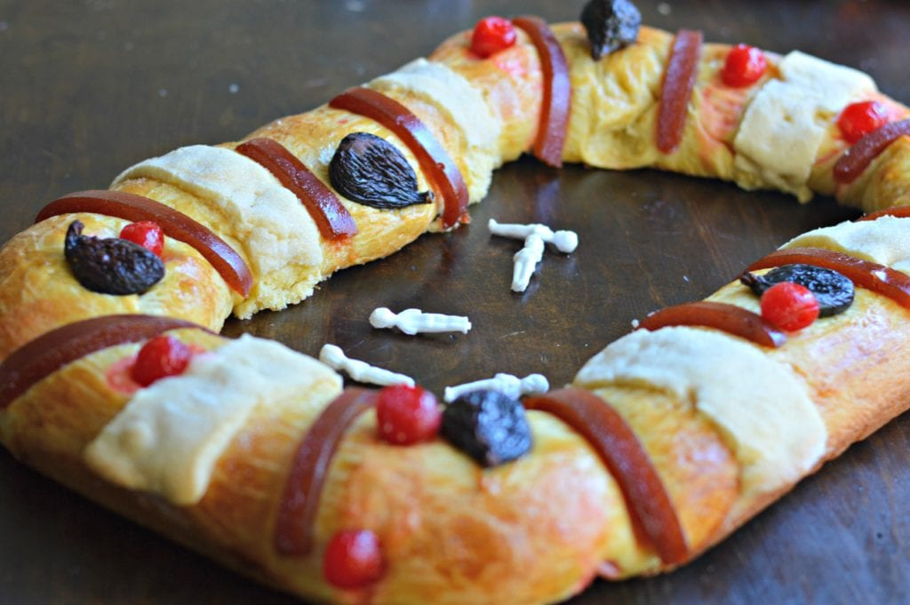

My Home Page
My Favorite Holiday
My favorite holiday is Día de los Reyes Magos, also known as Three Kings Day!
Here are some key details about this holiday:
- When: January 6
- Why: To celebrate Jesus being born.
- What: We cut a special bread called Rosca de Reyes that has figurines inside that you have to try to avoid.
Picture of Rosca de Reyes:
Families celebrate with parades, music, and gatherings, and everyone shares a Rosca de Reyes, a sweet ring-shaped bread decorated with dried fruit. Inside the bread is a tiny baby Jesus figurine, and whoever finds it hosts a Día de la Candelaria celebration on February 2nd.
History and Significance:
- Biblical Origin: Honors the visit of the Three Wise Men (Melchior, Gaspar, and Balthazar) to baby Jesus, guided by the Star of Bethlehem.
- Cultural Arrival in Mexico: Brought by Spanish colonizers in the 1500s, it became a core part of Mexican Christmas traditions.
- Community Celebrations: Cities in Mexico hold “Cabalgatas de Reyes” (Three Kings parades) with music, candy, and festivities.
- Spiritual Meaning: Represents faith, generosity, and gratitude, reminding families of the importance of giving and celebrating together.